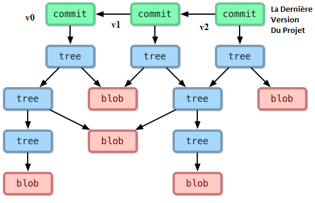
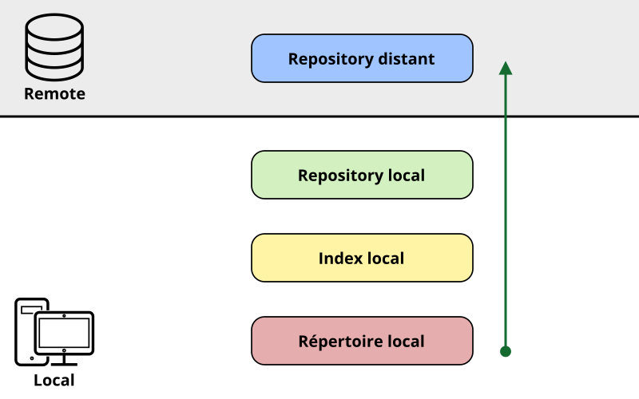
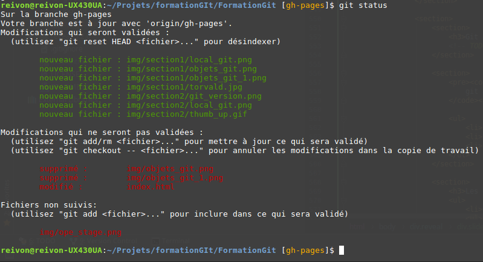
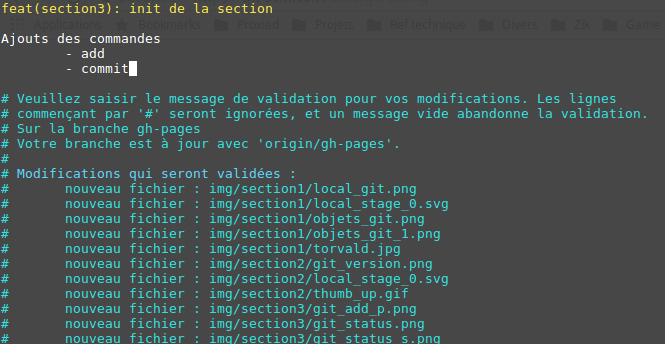

GIT
A la découverte de l'outil de gestion de version
Créé par Tony MEMBOT via l'API de présentation Reveal.js
Suivons l'histoire vraie de Robin

Création d'un site internet
- Indéxer ses films préférés
- Trotro le coquin / Robocar Polly fait des bêtises / ...
- Evolutif
- Critique de série
- Réseau social
- Création d'une crypto-monnaie ...
Première version

Une première évolution ...
- Ajout de bloc de publicité un peu partout sur le site
- Nécessite l'inclusion de plusieurs librairies javascript
- Modification de la majorité des pages
- Modification de la base de données
- Etc.
... qui se passe mal

Il faut revenir en arrière !
- Trop de fichiers modifiés
- Pas de sauvegarde du site avant la modification
- Des heures de bonheur en vue ...
Première VRAI évolution
Mise en place d'un système de gestion de version
Robin part à la chasse et tombe sur GIT

Pourquoi choisir GIT ?
Il était une fois l'histoire de GIT

Il était une fois l'histoire de GIT
- 2002 : Linus Torvalds utilise BitKeeper pour Linux, logiciel propriétaire.

Il était une fois l'histoire de GIT
- 2002 : Linus Torvalds utilise BitKeeper pour Linux, logiciel propriétaire.
- Début 2005 : BitKeeper arrête sa version gratuite.
- Avril 2005 : Linus Torvald crée GIT, répondant à ses besoins (en 5 jours).
- Système de fichier évolué
- Décentralisé
- Libre
- Dernière version : 2.15.1 (28/11/2017)
Centralisé VS décentralisé

Les ingrédients de GIT
- Tout est SHA1 : Identifiant unique de chaque objet
- Blob : contenu des fichiers
- Tree : répertoire de blob et/ou autre tree
- Commit :
- Un Tree
- 0 ou N commits parents
- Un message de description
- Tag
Les objets GIT

Cheminement des commits
Les références
- Système de pointeur vers des commit
- Ce qui conduit à un système évolués de branching (déviation)
- Merge rapides et simplifiés, accompagnés d'outils
- => Travail en parallèle
- => Reprise de commits d'une autre branche
- => etc.
L'espace de travail
Particularités
- Tout est ajout
- Même les suppressions de fichiers / dossiers
- Même les merge
- Les liens / commit déférencés sont automatiquement supprimés
Différence de stockage

Git est optimiser pour ...
- Être rapide
- Être robuste
- Gérer un grand nombre de fichier
- Réaliser des développements distribués
- Rendre trivial la gestion des branches et des merge
- Sa compatibilité : SVN / CVS / HTTP / SSH / ...
... mais l'est moins pour
- Gérer les gros fichiers binaires
- Son côté non "user friendly" / brouillon aux premiers abords
- Les interfaces UI => vive la console
Robin est convaincu, il part sur GIT

Mise en place de GIT
Installation
- Systèmes Linux
yum install gitsudo apt-get install git - Systèmes windows (émulation git bash)
http://gitforwindows.org/
Installation
- Linux : dans un terminal
- Windows : dans git bash
Paramétrer GIT
- Locale (repository)
git config --local - Global (user)
git config --global - Système (tout users)
git config --system
Paramétrer GIT
- Vérifier ses paramètres
git config --list - Vérifier un paramètre spécifique
git config user.email
Identifiez vous !
git config --global user.name r.hood
git config --global user.email robin.hood@gmail.com
Get Started
git init
touch readme.txt
git status
git add readme.txt
git status
git commit -m "My first commit !"
git status
git log
Robin met en pratique
- Installer de git sur le poste
- Vérifier l'installation
- Configurer git au niveau user
- Initialiser un repo vide
- Créer un fichier vide dans ce repo et je le commit
Robin est prêt à mettre en place GIT

Maîtriser les bases
Initialiser un nouveau repository
git init
- Permet d'initialiser un repository vierge.
- Crée un dossier .git
- Initialise une branche nommée master
- Initialise une référence HEAD
- Initialise un working tree/arbre de travail
- Peut être utilisé dans un dossier contenant déjà des dossiers/fichiers
Dossier .git
- Seulement présent à la racine du projet
- Contient :
- config : Fichiers de configuration (style .ini)
- objects/* : Repository des objets
- refs/heads/* : Branches
- refs/tags/* : Tags
- logs/* : Logs
- refs/remotes/* : Tracking des remotes
- index : le "cache index" (staging)
- HEAD : pointeur sur un commit de la branche courante (parent du prochain commit)
Les options intéressantes
- Options :
-
- --bare : Création d'un repository sans arbre de travail.
- --shared : Partager son repository (user linux)
Note : Pour obtenir de l'aide sur une commande
git [command] --helpRappel structure du working tree

Status du repository
git status
- Permet de voir l'état du working tree
- Identifie les éléments
- Prêt à être commit (staged)
- Suivis mais non staged (tracked)
- Non suivis (untracked)
- Aide à la prochaine action
Git status
Les options intéressantes
- Options :
-
- --short | -s : affiche le statut en short-format
- --branch | -b : avec short affiche les infos de branch
- --untracked-files= | -u : paramètre l'affiche des untracked
- --untracked-files=no | -uno : N'affiche rien
- --untracked-files=normal | -unormal : Affichage normal
- --untracked-files=all | -uall : Affichage verbeux
- --ignored : voir les fichiers ignorés
Git status

Les options intéressantes
git config --global status.added yellow
git config --global status.changed green
git config --global status.untracked cya
git config --global status.showUntrackedFiles all
Mettre à jour l'index
Mettre à jour l'index
git add [filename]
- Permet d'ajouter des fichiers dans la zone d'index (staging)
- Permet d'ajouter des portions de code dans la zone d'index
- Se base sur le contenu du working tree
- Ignore les fichiers / dossiers du .gitignore
Les options intéressantes
- Options :
- --all | -A : Ajout de toutes les modifications
- --patch | -p : Ajout partiel
- --dry-run | -n : Test, sans appliquer la commande
- --ignore-removal : Ignorer les fichiers supprimés
Quelques exemples
- Tous les png du dossier image (et sous dossiers)
git add image/\*.png - Tous les properties à la racine (sans les sous dossiers)
git add *.properties
Quelques exemples
- Ajouter tous les fichiers et sous dossiers à partir de la commande
git add . - Prendre en compte toutes les modifications
git add -A
Quelques exemples
- Ajouter du code partiellement
git add -p index.html - https://git-scm.com/docs/git-add#git-add-patch
Remarque
git add [filename]
==
git stage [filename]
Stocker mon travail
Stocker mon travail
git commit
- Permet de stocker l'index dans un commit
- Une description est obligatoire !
Git commit
Les options intéressantes
- Options :
- --all | -a : Réalise un add avant de faire le commit
- --patch | -p : Pour réaliser un commit partiel
- --dry-run | -n : Test, sans appliquer la commande
- --message "message" | -m "message" : Appliquer une description
- --amend : met à jour le précédent commit plutôt que d'en recréer un
- Il est possible de spécifier un dossier/fichier pour ne commit que lui
Les options intéressantes
git config --global core.editor nano
git config --global commit.template ~/.template.txt
git config --global commit.status true
Normer son message de commit
- Commencer par une courte description d'au plus 50 caractères
- Laisser la deuxième ligne vide
- Réaliser une description détaillé dans les lignes suivantes.
- Le # défini un commentaire et est ignoré par défaut
Quelques exemples
- Réaliser un commit de l'index en place avec description
git commit -m "feat(section3): init section" - Réaliser un commit en réalisant un add
git commit -a - Si on ne donne aucune description
Historique des commit
git log
- Permet de visualiser l'historique de commit
Les options intéressantes
- Options :
- --oneline : Affiche un commit sur une ligne
- --decorate=full : Permet d'afficher les références
- --format= : Pour spécifier un format custom (short / fuller / ...
- Il est possible de spécifier un path pour connaître son historique
- Possibilité de filtrer sur
- Des dates (since / after / until / ...)
- Des numéros de commit, des auteurs
- Des merges, regex, ...
Quelques exemples
- Récupérer le maximum d'information
git log --decorate=full --format=fuller
Quelques exemples
- Avoir une vue rapide sur l'ensemble des commits
git log --oneline
Quelques exemples
- En mode graph, avec les branches, format custom, date relative ...
git log --graph --abbrev-commit --decorate --date=relative --all --format=format:'%C(bold blue)%h%C(reset) - %C(bold green)(%ar)%C(reset) %C(white)%s%C(reset) %C(dim white) - %an%C(reset) %C(bold yellow)%d%C(reset)'
Robin met en pratique
- Initialiser un repo GIT dans un projet existant (index.html)
- Ajouter tous les fichiers du repo à l'index
- Réaliser le commit d'initalisation
- Créer un fichier index.css & index.js. Modifier index.html sur 2 lignes différentes
- Gérer et vérifier l'index pour ne commit que index.js
- Gérer et vérifier l'index pour ne commit que la deuxième modification d'index.html
- Commit tous les fichiers
- Supprimer physiquement index.css et réaliser le commit
Robin est content

- Il a commit son projet, il est en mesure d'être safe dans ses développements
- Mais il a des besoins un peu plus poussés :
- Comment revenir sur un add/commit malencontreux
- Comment checker les différences entre deux versions
- Comment dominer le monde du cinéma ...
Git diff
Les options intéressantes
- Options :
Git checkout
git checkout [filename]
Git reset
Les options intéressantes
- Options :
Git revert
Les options intéressantes
- Options :
Git clean
Les options intéressantes
- Options :
Explorons les repos distants
Git clone
Commande permettant de dupliquer un repository distant.
C'est la branche par défaut (généralement nommée master) qui est récupéré
 https://git-scm.com/docs/git-clone
https://git-scm.com/docs/git-cloneSSH ou HTTPS ?
Git checkout
Git pull
Les options intéressantes
- Options :
Git push
Git fetch
GIT ignore
- Git ignore
- Git ignore global (dans le fichier, partie core : excludesfile = ~/.gitignore_global)
- www.gitignore.io
Les commandes avancées
- branch
- stash
- merge
- rebase
- tag
- mv
- rm
- log
Les commandes "experts"
- blame
- bisect
- archive
- gitk
- cherry-pick
Git flow
Ligne de commande ou IDE ?
Allons plus loin
git config --global alias.logall "log --graph --abbrev-commit --decorate --date=relative --format=format:'%C(bold blue)%h%C(reset) - %C(bold green)(%ar)%C(reset) %C(white)%s%C(reset) %C(dim white) - %an%C(reset) %C(bold yellow)%d%C(reset)' --all"
git config --global alias.wdiff "diff --word-diff"
[color] ui = auto